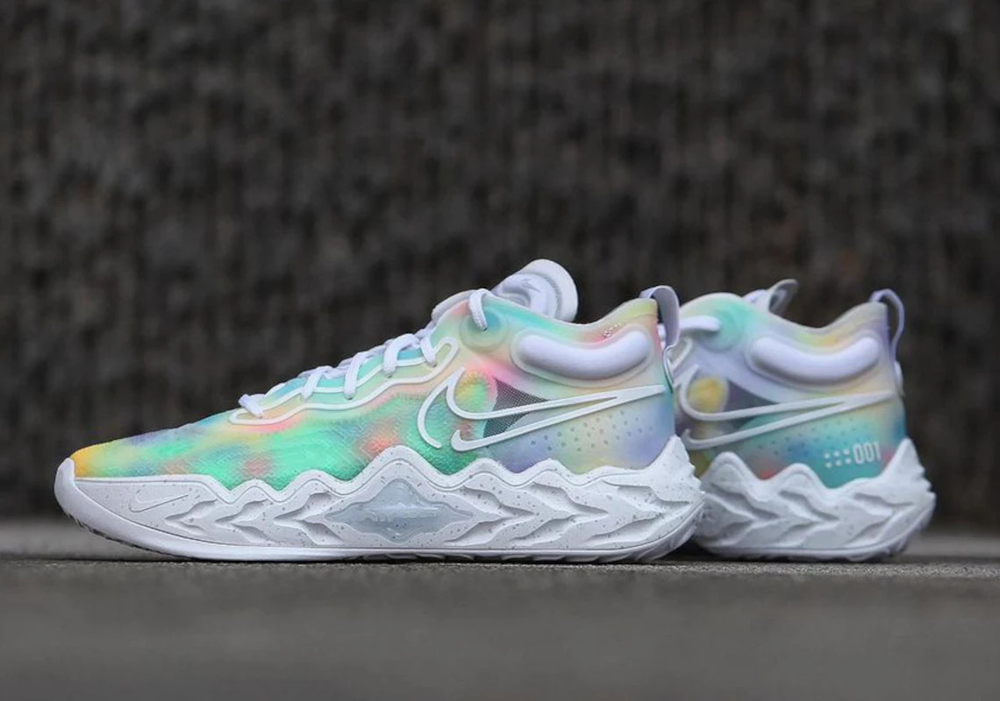
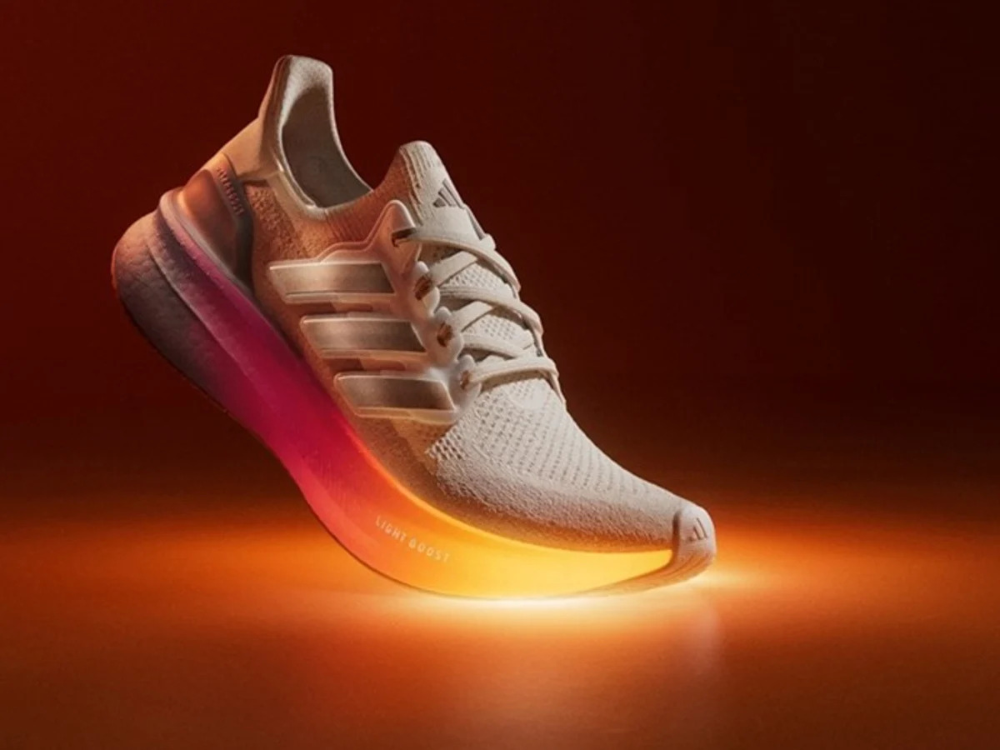

Đánh Giá Nổi Bật
Giá cả: 2.000.000đ - 3.500.000đĐệm: Zoom Air cải tiếnKhả năng giảm chấn hàng đầu trong các dòng giày chạyĐộ bền: Có thể sử dụng hơn 2 nămPhù hợp với hầu hết mọi loại địa hìnhVân đế: Công nghệ mới chống trơn trượt, thích ứng mọi thời tiếtGiày có thiết kế cổ cao, chống lật cổ chân khi chơiMàu sắc: Đa dạng màu sắc và mẫu mã
Giày Chạy Bộ Nike Air Zoom
Đôi giày hoàn hảo cho người yêu chạy bộ, với công nghệ Zoom Air mang lại sự thoải mái vượt trội.
Giá cả: 2.500.000đ - 4.000.000đĐệm: Boost độc quyền của AdidasKhả năng hoàn trả năng lượng tối ưuĐộ bền: Có thể sử dụng hơn 3 nămPhù hợp cả đi làm lẫn chạy bộVân đế: Công nghệ NoSlip chống trượt, được đánh giá rất caoGiày có thiết kế với nhiều kiểu dáng hiện đạiMàu sắc: Đa dạng màu sắc và mẫu mã
Adidas Ultraboost
Phù hợp cho mọi hoạt động, từ chạy bộ đến đi làm, với thiết kế phong cách và đệm siêu êm.